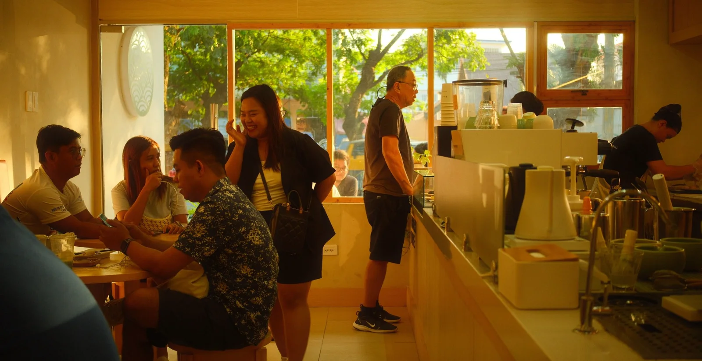
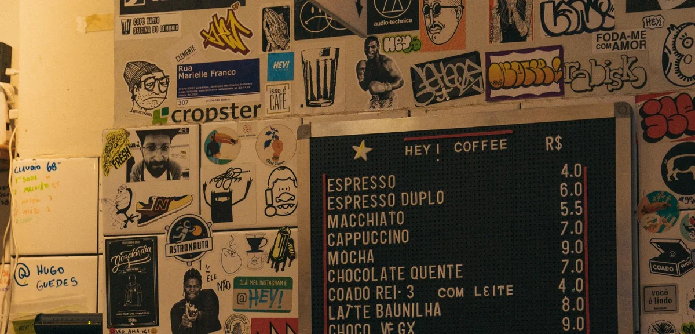
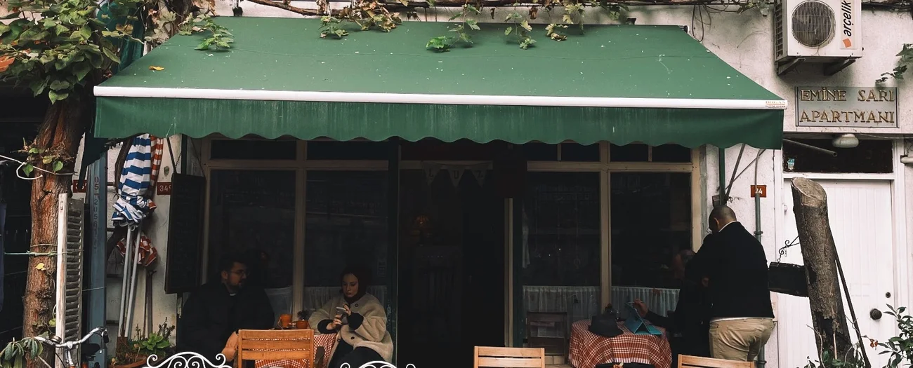
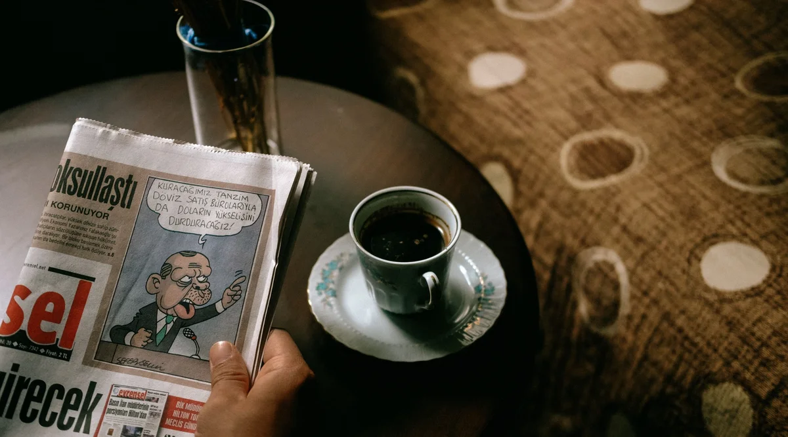
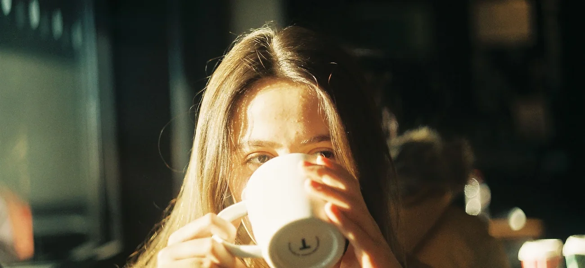
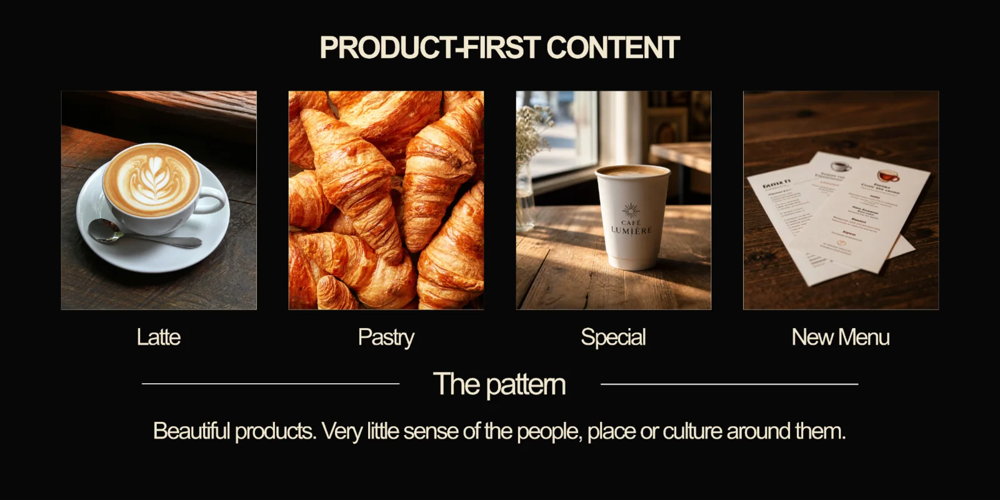
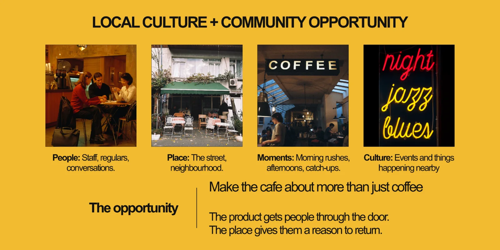

PEOPLE
NEARBY.
Local residents, workers, students and repeat visitors who value familiarity and atmosphere as much as the menu.
A neighbourhood café concept built around everyday ritual, real people and the energy of being somewhere worth returning to.





Developed to demonstrate local-business positioning, social content strategy, creative direction, campaign thinking and community-led content for a fictional neighbourhood café. No client results are implied.
Local cafés often post products without building a recognizable personality. Café Lumière needs to become more than a place that sells coffee. It needs to feel like part of the neighbourhood's rhythm.


People are not only buying coffee. They are choosing where to begin the day, meet someone, work for an hour, or become a regular.
Local residents, workers, students and repeat visitors who value familiarity and atmosphere as much as the menu.
Good coffee, quick recognition, small rituals and enough personality to make choosing the café feel intentional.
The staff, the light, the music, the corner table, the joke on the board and the feeling that the café belongs to its street.
Café Lumière should sound and behave like a familiar place with a point of view. Warm, observant, social and rooted in the everyday life around it.
Talk about the neighbourhood, not just the product.
People, movement and real moments over perfect still life.
Build recurring rituals people recognize and return to.
Give the café its own language instead of generic coffee captions.
Consistency comes from recurring characters, places and rituals, not from forcing every post into the same template.
Staff, regulars, quick conversations, local collaborations and the people who make the café feel lived in.
Morning coffee, favourite tables, lunchtime rushes, rainy days and the routines people build around the space.
Menu stories, seasonal items, ingredient details and product content that still feels like part of the café's world.
Local events, nearby businesses, street details and reasons to follow even when someone is not buying coffee today.
A recurring timestamp turns an ordinary morning into a recognisable social ritual. Same time, different people, weather, tables and reasons to be there.
People, product, atmosphere and community each get a role, so the café never becomes a feed of identical cups.
For a local café, the useful question is whether social content increases familiarity, local discovery and actual reasons to visit.
How much of the audience is actually near enough to become a customer.
Saves, shares, repeat viewers and recurring-series engagement.
Profile visits, map taps, website clicks and DMs about menu or events.
Offer redemptions, event attendance and campaign-linked store traffic.
User mentions, tagged visits, repeat interaction and local collaborations.